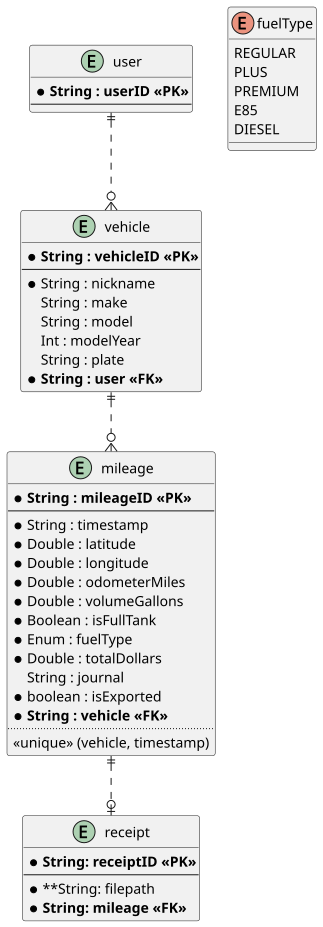
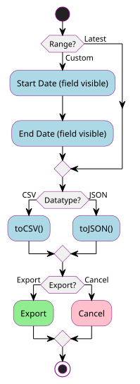

Readme
Table of Contents
1. General
This application provides a succinct interface for recording vehicle mileage and reporting metrics such as fuel efficiency.
2. Design
2.1. Requirements
2.1.1. Functional Requirements
- Add/view/edit/delete vehicles
- Add/view/edit/delete mileage records
- Add/view/delete mileage attachments
- Notify the user if location accuracy is poor or unavailable.
- Compute and display average MPG in the vehicle UI.
- Compute and display price per gallon in the mileage UI.
- Display a list of vehicles on the home screen.
- Display mileage records in descending order on the vehicle screen.
- Render mileage records to indicate their non-exported status.
- Export mileage records.
2.1.2. Non-functional Requirements
- Maintainable application architecture utilizing Android best practices and recommendations.
- Version-controlled source code using Git.
- Public GitHub repository licensed under GPLv3.
- Test-driven development of the data layer, including integration tests for CRUD and ViewModel state holders, and unit tests for core business logic (e.g., average MPG calculation).
- Publish on the Play Store with a modest convenience fee.
2.2. Language/SDK
- Android application written in Kotlin.
- Minimum SDK: Android 8.1 (API 27).
2.3. Frameworks/Technology
- Room (SQLite abstraction) for local persistence.
- Jetpack Compose for UI.
3. Implementation
3.1. Entity Relationship Diagram

3.2. Timestamp
Timestamps are stored as UTC ISO-8601 (e.g., Instant) and further converted to LocalDate for display in the UI.
3.3. Location Accuracy Threshold
An acceptable location accuracy threshold (meters via Location.getAccuracy()) will be defined, and validation will be implemented to flag records that exceed the threshold.
3.4. Average MPG
The application queries the vehicle’s last 10 mileage records and computes average miles per gallon by dividing total miles driven by total gallons pumped. This is implemented in VehicleDAO.selectAverageMilesPerGallonLNR and exposed via VehicleRepository.getAverageMPG. Non-full-tank records are included as-is and Vehicle.isFullTank is retained as metadata, leaving options open for adjusting the algorithm.
3.5. Export Mileage Records
The user taps the export button on the vehicle screen, selects either the latest (non-exported) records or a custom date range, and chooses CSV or JSON format. The application delegates export handling to a system activity (e.g., email, SMS). If all is successful, each record’s isExported flag is set to true.
4. Screens
4.1. Home
4.2. Vehicle
4.2.1. Export Vehicle Mileage
Exports are requested via form employing conditionally rendered fields.

5. Future
5.1. User/Firebase/et al Sync
Initially, this is a device-local, single-user application. Migration to centralized cloud storage would improve data durability across device changes and data loss scenarios.
5.2. Lat/Lon + Timestamp Business Delineations
Currently, the application cannot determine the business where a fill-up occurred. Potential enhancements include:
- With the latitude/longitude and timestamp of the mileage record, the system could resolve the business against a public dataset.
- Using Optical Character Recognition (OCR) and AI to extract business information from receipt images.
5.3. Formatted PDF Mileage Exports
Provide an option to export formatted PDF reports for either the latest (non-exported) mileage records or a custom date range. See Chore Buddy for implementation reference.